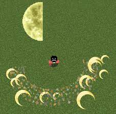
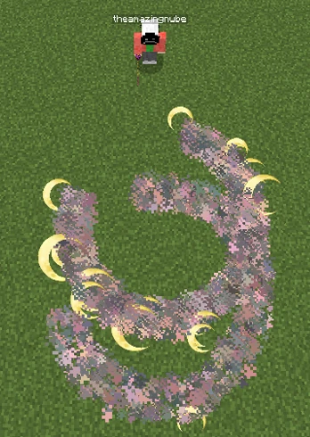
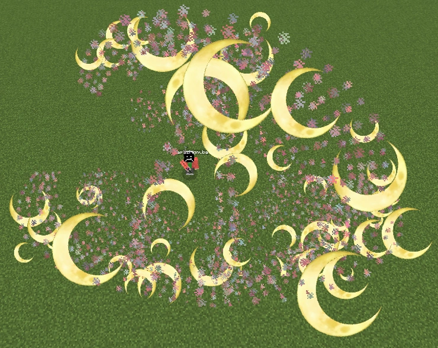

.jpeg)
Primeira Forma: Lua Negra – Palácio da Tarde :-Como de costume, a primeira forma é relativamente simples, mas não deixa de ser poderosa.

Segunda Forma: Flores de Pérola.: - O usuário faz dois cortes com espada, gerando variações de lâminas caóticas ao mesmo tempo, essas lâminas são jogadas para todos os lados sem direção fixa, cortando que as tocar
terceira Forma: Lua Repugnante – Correntes:-Parecido com a segunda forma. A terceira forma são dois cortes em formas de lua, que geram lâminacas caóticas para serem jogadas a todos os lados, esse ataque causa muita destruição em área. 
Quarta Forma: Redemoinho Calamitoso do Espírito Lunar:O usuário faz vários cortes curvados um em cima do outro, criando uma espécie de vórtex,todas as criaturas em um cone em a sua frente devem ser bem sucedidas na direção do alvo.
Quinta Forma: Noite Perpétua, Lua Solitária – Incessante:o usuário faz uma multitude de cortes em forma de lua crescente em sua frente, causando danos devastadores.
.jpeg)
Sexta Forma: Espelho do Infortúnio – Enluarado:-Ao balançar sua espada em um arco,o usuário cria uma verdadeira onda de destruição em várias direções, forte o suficiente para deixar marcas profundas no chão, e empurrar seus inimigos para trás com facilidade,todos os alvos na área. 
Espada de michikatsu tsugikuni. ☞Material do punho Madeira Comprimento da lâmina: 76 mm Comprimento do punho: 28 cm Peso :890 g coloraçao da espada:roxo.